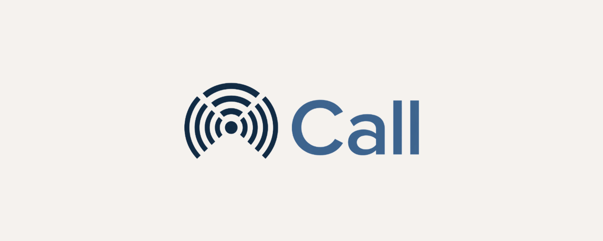

Phase 1 - Foundation
XCall records your team's phone calls and streams the events to Odoo. This connector is the secure bridge - connection, webhook subscription and event ingest.
Set the XCall server URL and API key on each company, then test the connection with one click.
Odoo registers its own receiver URL and subscribes to call events on the server. Subscribe / unsubscribe from a button.
Every incoming webhook is checked with an HMAC signature. Forged or unsigned requests are rejected.
Duplicates are dropped and each event is written to a searchable log, so nothing is processed twice and everything is auditable.
A XCall account and server (API key + secret from the XCall panel). This module is a connector to that service and does not work standalone.
XCall - Odoo 19 - LGPL-3